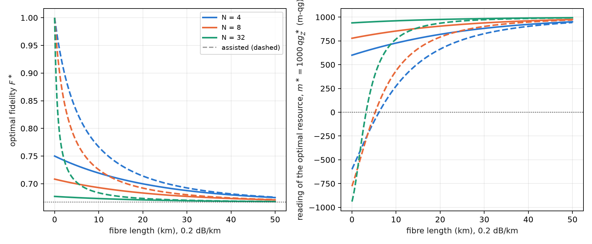
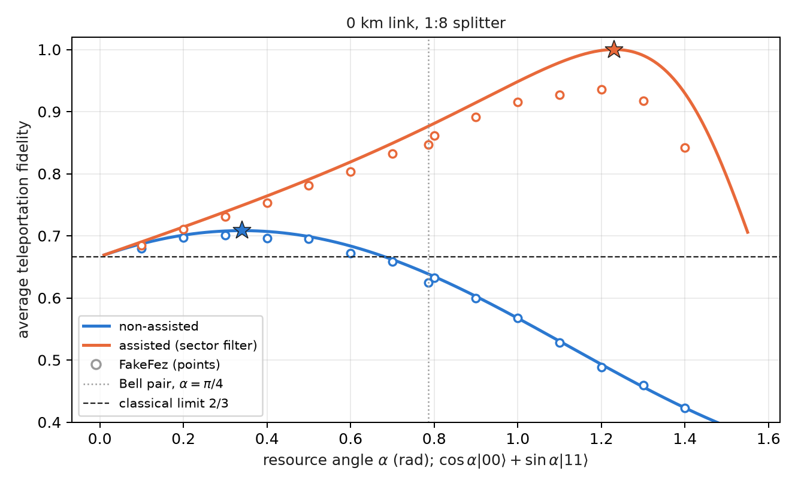
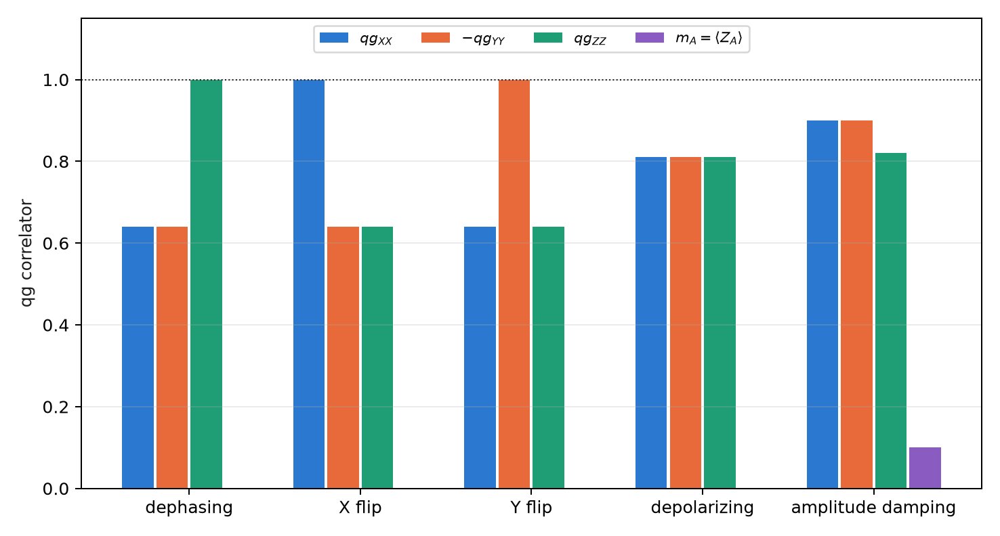

12 Optical teleportation and the Bell-pair limit
Part IV takes the qang scale to quantum communication networks. This chapter deals with teleporting a qubit through a passive optical network: a central office shares an entangled state with a user through a fibre and a passive \(1{:}N\) splitter, and the photon arrives with low probability. The question is which state to share. The usual answer, a Bell pair, stops being optimal as soon as the channel loses photons, and the optimal state is fixed by a single number: the \(qg_Z\) reading of one of its qubits. The chapter closes with the qg reading of Bell pairs in a network, which is what Chapter 13 uses as a predictor of the fidelity.
12.1 From the base: the fidelity is a probability
The fidelity of teleporting an input state is the probability that Bob, after undoing the preparation, measures 0: it is a \(p_0\) of Chapter 1, with its reading \(m=1000(2p_0-1)\) m-qg and its error bar. The average fidelity over the Bloch sphere is obtained exactly with six inputs, the cardinal states \(|0\rangle\), \(|1\rangle\), \(|\pm\rangle\), \(|\pm i\rangle\), because they form a spherical 3-design.
The shared state is \(\cos\alpha|00\rangle+\sin\alpha|11\rangle\), and each of its qubits has
\[ qg_Z=\cos^2\alpha-\sin^2\alpha=\cos2\alpha,\qquad \alpha=\frac{\arccos qg_Z}{2}. \]
The resource angle is half the qang angle of either of its qubits. The Bell pair, \(\alpha=\pi/4\), is the equator: \(qg_Z=0\), \(m=0\). A less entangled resource leans toward \(|00\rangle\) (\(m>0\)); a “more than maximally entangled” one, in the sense of this section, leans toward \(|11\rangle\) (\(m<0\)). The whole design rule of this chapter is an m-qg reading of a single qubit.
12.2 Teleportation with a Bell pair
In the protocol of Bennett and co-workers (1993), Alice measures her input qubit and her half of the resource in the Bell basis, sends Bob two classical bits, and Bob applies one of four Pauli corrections. With a perfect Bell pair the fidelity is 1. With an imperfect resource, the average fidelity depends only on its singlet fraction \(f=\langle\Phi^+|\rho|\Phi^+\rangle\):
\[ F=\frac{2f+1}{3}, \]
and teleportation beats every classical strategy (measure and resend) only if \(F>2/3\), that is, \(f>1/2\). In the circuit the Bell measurement is in deferred form (CX, H, CX, CZ), with no mid-circuit measurements.
12.3 A channel that loses photons
In a downlink passive optical network (§157) the resource’s second qubit is a photon present or absent (single rail) that travels through a fibre of transmission \(T=10^{-0.02L}\) (\(L\) in km, 0.2 dB/km) and reaches a \(1{:}N\) splitter. For Bob’s mode both are beam splitters, that is, RBS gates that conserve the photon number, and the photon arrives with probability
\[ \eta=\frac{T}{N}. \]
A lost photon leaves Bob in \(|0\rangle\): the channel is amplitude damping, which does not treat the two branches of the resource alike. The \(|00\rangle\) branch has nothing to lose; the \(|11\rangle\) branch loses its photon with probability \(1-\eta\). So it pays to put less weight on the fragile branch, and the optimum moves away from \(\alpha=\pi/4\).
12.4 The design rule
The singlet fraction of the resource after the channel is
\[ f=\frac{(\cos\alpha+\sqrt\eta\,\sin\alpha)^2}{2\,(\cos^2\alpha+\kappa\sin^2\alpha)} , \]
with \(\kappa=1\) in the non-assisted protocol, in which only Alice and Bob act. In the assisted protocol the other \(N-1\) users report whether the photon reached them, and those shots are discarded: it is a sector filter on the other users’ register, and the only loss left unheralded is the fibre loss, with \(\kappa=\eta+1-T\). Maximizing \(f\) gives
\[ \tan\alpha^\ast=\frac{\sqrt\eta}{\kappa},\qquad F^\ast=\frac{2+\eta/\kappa}{3},\qquad qg_Z^\ast=\cos2\alpha^\ast=\frac{\kappa^2-\eta}{\kappa^2+\eta} . \]
The original master index wrote the rule as \(\sqrt{\eta/\kappa}\); the correct form is \(\sqrt\eta/\kappa\), which is what the code verifies. The whole rule is the third formula: one resource qubit measured in \(Z\) fixes \(\alpha\). On the four links of the experiment:
| link | protocol | \(\eta\) | \(\alpha^\ast\) (rad) | \(F^\ast\) | \(m^\ast\) (m-qg) | Bell pair | kept at \(\alpha^\ast\) |
|---|---|---|---|---|---|---|---|
| 0 km, 1:4 | non-assisted | 0.250 | 0.464 | 0.750 | +600 | 0.708 | 1 |
| 0 km, 1:4 | assisted | 0.250 | 1.107 | 1.000 | −600 | 0.933 | 0.40 |
| 0 km, 1:8 | non-assisted | 0.125 | 0.340 | 0.708 | +778 | 0.639 | 1 |
| 0 km, 1:8 | assisted | 0.125 | 1.231 | 1.000 | −778 | 0.876 | 0.22 |
| 20 km, 1:4 | non-assisted | 0.100 | 0.306 | 0.700 | +819 | 0.622 | 1 |
| 20 km, 1:4 | assisted | 0.100 | 0.423 | 0.714 | +663 | 0.672 | 0.95 |
| 20 km, 1:8 | non-assisted | 0.050 | 0.219 | 0.683 | +905 | 0.583 | 1 |
| 20 km, 1:8 | assisted | 0.050 | 0.330 | 0.692 | +790 | 0.635 | 0.96 |
Three readings of the table. Without assistance, the Bell pair may be useless: on a 1:8 splitter, or at 20 km, it falls below 2/3, and only the optimal resource, leaning toward \(|00\rangle\), beats the classical limit. With assistance and no fibre, the optimum has \(F^\ast=1\) at \(\tan\alpha^\ast=\sqrt N>1\): the resource leans further toward \(|11\rangle\) than a Bell pair, and the splitter’s filtering brings it back to exactly a Bell pair; the price is the kept fraction. In that case \(\kappa=\eta\) and \(qg_Z^\ast=-(1-\eta)/(1+\eta)\), exactly the opposite reading of the non-assisted case: \(-600\) against \(+600\) m-qg at \(N=4\). With fibre, the unheralded loss dominates again and the assisted optimum returns to the \(|00\rangle\) side (Figure 12.1).

It is the discrete-variable version of a continuous-variable result: in a passive optical network, non-assisted teleportation has a finite optimal squeezing, and assisted teleportation one that goes to infinity at short distance (Yaghoobianzadeh and Salehi, 2026). The non-maximally entangled resource is the analogue of finite squeezing.
12.5 The rule on simulated devices
The circuit has five qubits (input, Alice, Bob, the fibre’s environment and the other users), with the fibre and the splitter as RBS gates. It was run with 14 resource angles plus \(\pi/4\), six inputs and 4000 shots, on three simulated noise models (§157). Five of the six pre-registered predictions held:
| check | result |
|---|---|
| Q1 best non-assisted angle within 0.1 rad of \(\alpha^\ast\) | 12 of 12 |
| Q2 0 km, 1:8: Bell pair below 2/3, best angle above | 0.624–0.627 and 0.690–0.701 on all 3 |
| Q3 assisted beats non-assisted | 12 of 12 |
| Q4 assisted optimum above \(\pi/4\) at 0 km | 1.0–1.2 rad on all 3 |
| Q5 \(\lvert F_{\text{best}}-F^\ast\rvert<0.05\) | failed: 19 of 24; the 5 misses are assisted at 0 km (\(F^\ast=1\), measured 0.897–0.957) |
| Q6 kept fraction within 0.03 of \(\cos^2\alpha+\kappa\sin^2\alpha\) | 12 of 12 (largest gap 0.028) |

The design rule survives device noise (Figure 12.2): on a 1:8 splitter only the optimal resource beats the classical 2/3. And the qang scale, here, adds nothing against the noise: the teleportation circuit (H, CX) does not conserve the weight, so the only filter is the other users’ heralding. That is why the Q5 misses are where \(F^\ast\) is near 1: gate noise weighs more the higher the fidelity one is after. Chapter 13 asks what changes when every gate conserves the photon number.
The limits are stated: downlink only, single rail, simulated device noise, and no detector inefficiency or dark counts beyond the readout errors of the models.
12.6 Bell pairs in a network, read in qg
Before teleporting it pays to know how good the shared pair is. A pair meant to be \(|\Phi^+\rangle\) is described by five qg readings: three two-qubit correlators, \(qg_{XX}\), \(qg_{YY}\), \(qg_{ZZ}\), and the polar biases of each side, \(m_A=\langle Z_A\rangle\) and \(m_B=\langle Z_B\rangle\). Three measurement settings are enough (§57). The fidelity with \(|\Phi^+\rangle\) is exact for any state,
\[ F_{\Phi^+}=\frac{1+qg_{XX}-qg_{YY}+qg_{ZZ}}{4}, \]
and with it the teleportation fidelity the pair will give, \(F=(2F_{\Phi^+}+1)/3=(3+qg_{XX}-qg_{YY}+qg_{ZZ})/6\), without running the teleportation (Chapter 13 puts it to the test). The weights of the four Bell states say which error dominates: \(\Phi^-\) is a phase flip, \(\Psi^+\) a bit flip, \(\Psi^-\) both. With noise \(p=0.1\) on each half:
| noise | \(qg_{XX}\) | \(qg_{YY}\) | \(qg_{ZZ}\) | \(m_A=m_B\) | \(F_{\Phi^+}\) | dominant error |
|---|---|---|---|---|---|---|
| dephasing | +0.64 | −0.64 | +1.00 | 0 | 0.820 | \(\Phi^-\) |
| X flip | +1.00 | −0.64 | +0.64 | 0 | 0.820 | \(\Psi^+\) |
| Y flip | +0.64 | −1.00 | +0.64 | 0 | 0.820 | \(\Psi^-\) |
| depolarizing | +0.81 | −0.81 | +0.81 | 0 | 0.858 | all equal |
| amplitude damping | +0.90 | −0.90 | +0.82 | +0.10 | 0.905 | \(\Psi^+\) |

Each Pauli noise leaves one correlator untouched, and only damping (the T1 relaxation of a memory) moves the local biases (Figure 12.3). That reading decides how to distil. The DEJMPS protocol combines the \(\Phi^+\) weight with the error sitting in a fixed slot, and local rotations choose which error goes there. The textbook order can make things worse: with Y-flip noise, one round lowers the fidelity from 0.820 to 0.705, and with damping it gains almost nothing (0.828). The rule “smallest estimated error in that slot”, read from the three correlators with 200 shots per setting, reaches the best output in all three cases: 0.954, 0.954 and 0.915 (against an optimum of 0.920).
12.7 Without qang and with qang
| action | without qang | with qang | difference |
|---|---|---|---|
| choose the optimal resource | optimize the Schmidt coefficient \(\alpha\) | one reading: \(qg_Z^\ast=(\kappa^2-\eta)/(\kappa^2+\eta)\) on one qubit; the sign of \(m^\ast\) says which side of the Bell pair it is on | in favour for design and verification: it is calibrated by measuring one qubit in \(Z\) |
| decide whether the Bell pair works | compute \(F(\pi/4)\) | the Bell pair is \(m=0\); the optimum, \(m^\ast\) | equivalent in value; qang places it on the scale |
| reduce device noise | — | the filter does not apply: teleportation does not conserve the weight | none |
| diagnose a Bell pair | full tomography | three qg correlators and two biases; the signature picks the distillation (0.705 → 0.954 with Y flips) | in favour: three settings instead of nine, and a direct decision rule |
Balance. This is the chapter where the qang reading looks most like an engineering tool: one number sets the resource and three correlators diagnose the pair. Against noise it contributes nothing, and that is said.
12.8 In code
import math
from qang import qpon
eta, kappa = qpon.link(length_km=0, n_users=8, assisted=False) # (0.125, 1.0)
qpon.optimal_angle(eta, kappa) # 0.340 rad
qpon.optimal_fidelity(eta, kappa) # 0.708
qpon.average_fidelity(math.pi / 4, eta, kappa) # 0.639: the Bell pair, below 2/3
qpon.optimal_qg_z(eta, kappa) # 0.778 -> +778 m-qg
qpon.resource_angle_from_qg_z(0.778) # 0.340: the resource, from one reading
qc = qpon.teleport_circuit(alpha=0.340, transmission=1.0, n_users=8, input_index=2) # input |+>
qpon.fidelity_from_correlators(xx=0.81, yy=-0.81, zz=0.81) # 0.905 = (2 F_Phi+ + 1)/3, F_Phi+ = 0.85812.9 Summary
- The teleportation fidelity is a probability; the resource \(\cos\alpha|00\rangle+\sin\alpha|11\rangle\) has \(qg_Z=\cos2\alpha\) on each qubit, and the Bell pair is \(m=0\).
- On a channel that loses photons (\(\eta=T/N\)) the optimum is not the Bell pair: \(\tan\alpha^\ast=\sqrt\eta/\kappa\), \(F^\ast=(2+\eta/\kappa)/3\), \(qg_Z^\ast=(\kappa^2-\eta)/(\kappa^2+\eta)\).
- Without assistance, on a 1:8 splitter or at 20 km the Bell pair falls below 2/3 and the optimal resource stays above; with assistance and no fibre, \(F^\ast=1\) with a resource on the \(|11\rangle\) side.
- The rule survives simulated noise (five of six predictions); the qg filter does not help here because teleportation does not conserve the weight.
- A Bell pair is read with three correlators and two biases; each Pauli noise leaves one untouched, and that signature picks the right distillation round.